01
Imprimí
Archivos .stl listos para tu impresora FDM. Sin soportes complicados, sin piezas exóticas.
Te presentamos
Impulsado por ESP32-C3. Controlado desde el navegador. Sonido de vinilo.
Tú lo imprimes, tú lo armás, tú escuchás.

Filosofía
Gira no es un producto que comprás. Es un proyecto que construís. Cada pieza plástica, cada conexión electrónica y cada línea de código está disponible libremente. Descargá, modificá, mejorá — y compartí de vuelta.
Archivos .stl listos para tu impresora FDM. Sin soportes complicados, sin piezas exóticas.
Esquema electrónico documentado, con componentes accesibles y disponibles en cualquier tienda de electrónica.
Firmware open-source listo para grabar en el microcontrolador. Personalizá comportamiento, calibración e interfaz.
Poné tu vinilo favorito. El motor arranca, el brazo desciende, la música empieza.
Galería
Cada pieza, cada prototipo, cada detalle del Gira capturado en imágenes. Clic para explorar en detalle.
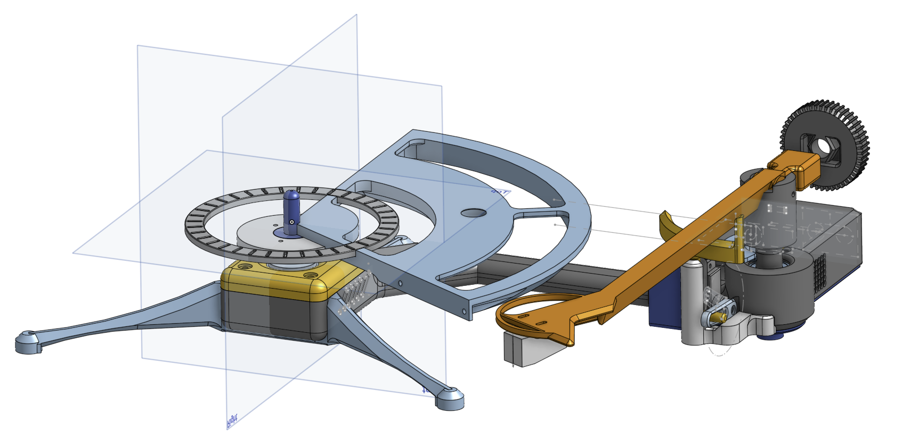
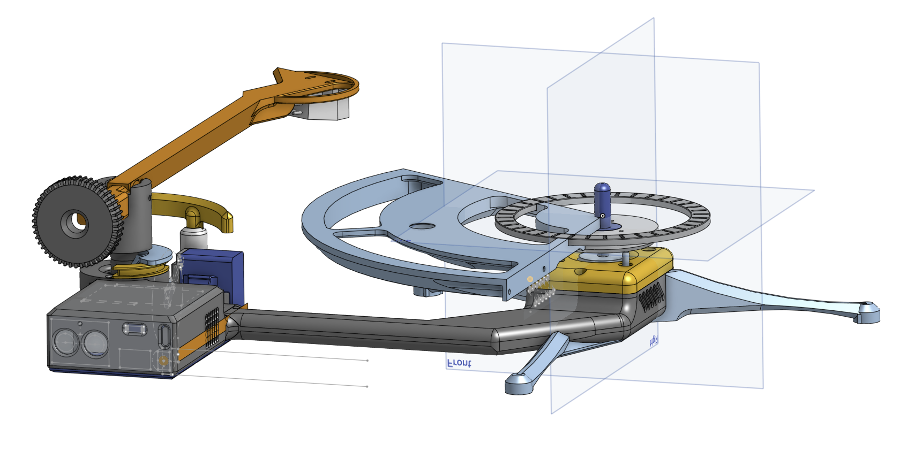
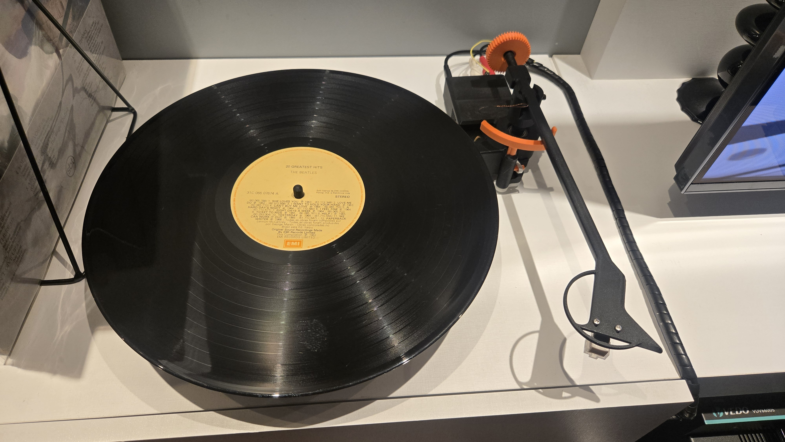
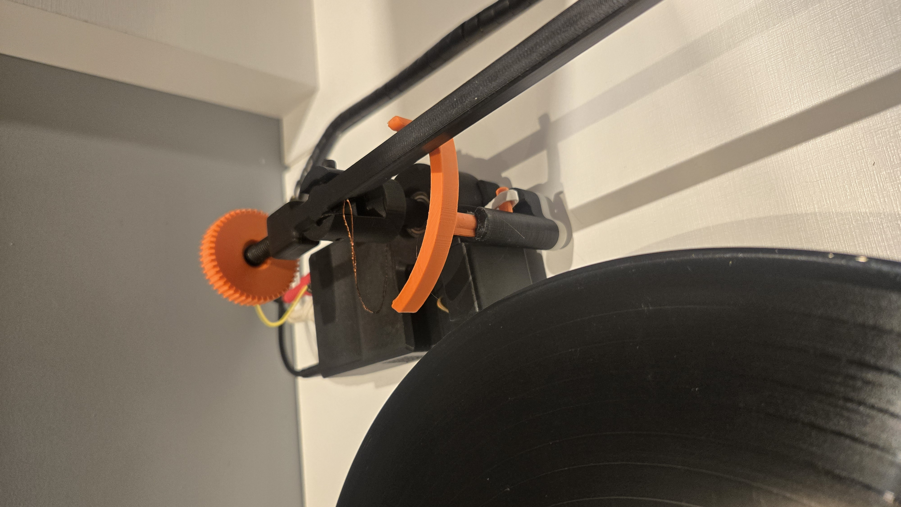
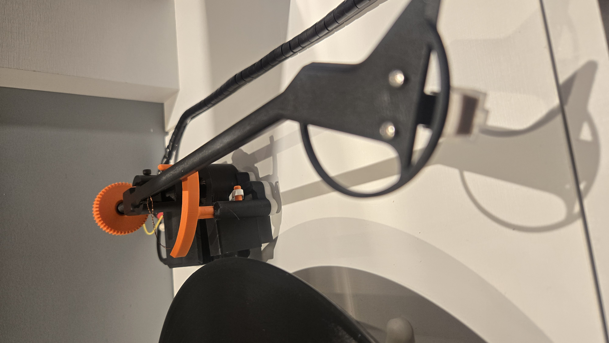
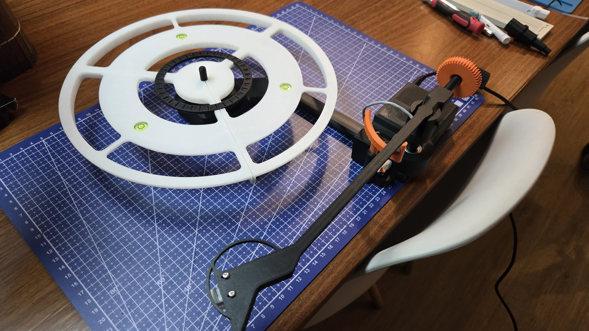
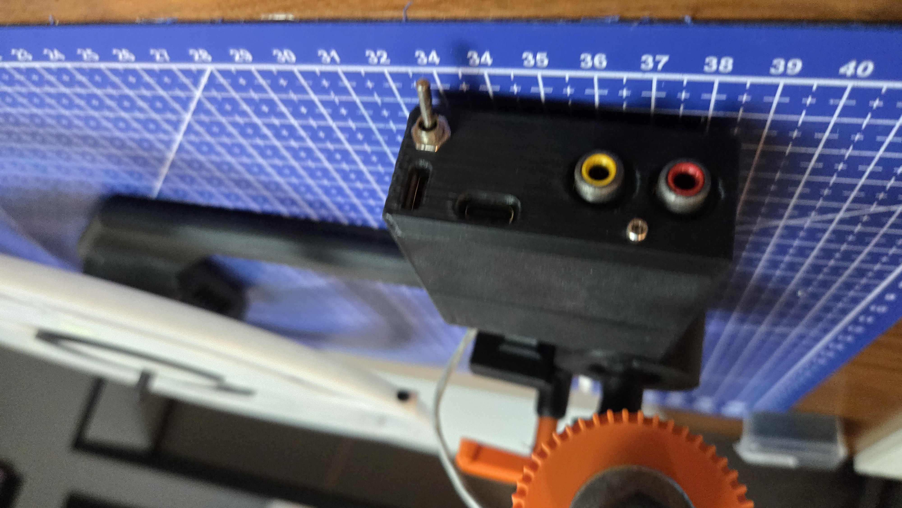
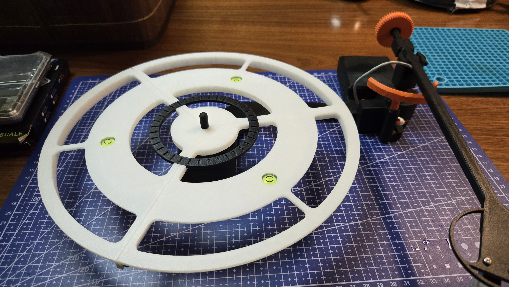
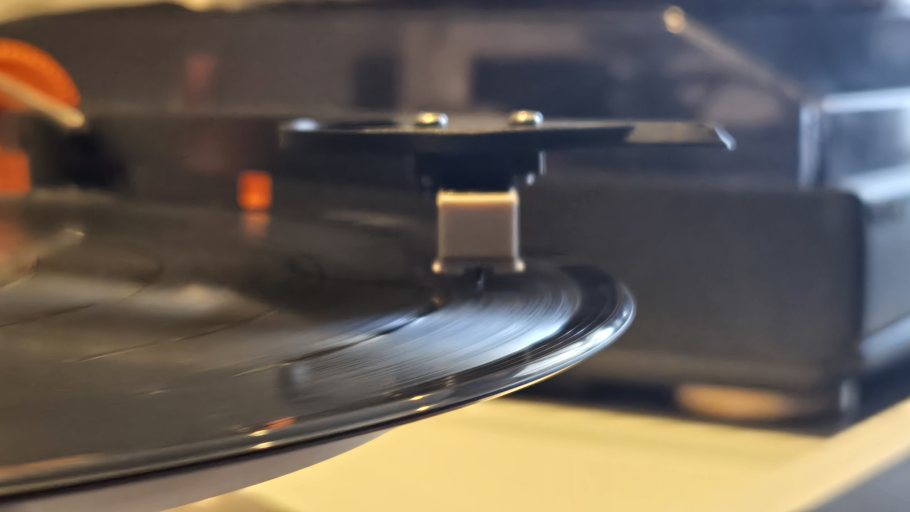


The Smart Side
Por dentro, Gira tiene un microcontrolador que hace lo que ningún tocadiscos clásico hace: control preciso desde el celular, calibración por software y modos de operación personalizables.
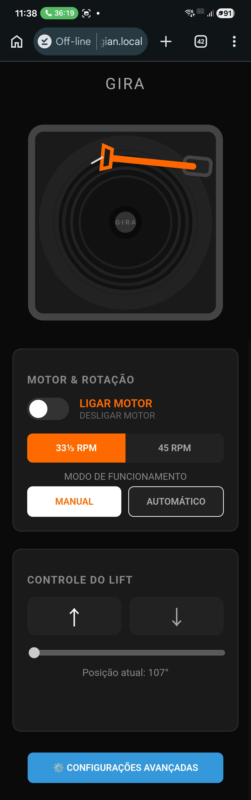
Interfaz Web
Conectate al Wi-Fi local y controlá todo directo desde el navegador de tu celular. Prendé el motor, ajustá la rotación, subí y bajá el brazo. Todo offline, todo tuyo.
Rotación Silenciosa
Motor paso a paso NEMA17 controlado en microstepping con StealthChop2. Prácticamente inaudible. Rampas suaves de aceleración y desaceleración.
Sensor Magnético
El sensor MT6701 monitorea el ángulo del brazo en tiempo real vía I²C. Gira detecta el inicio del disco, el final del lado — y nunca raya el vinilo.
Modos
En automático, el lift baja la aguja después del tiempo de debounce, toca el lado entero y suspende el brazo al detectar el final. En manual, vos comandás.
Wi-Fi & OTA
En el primer boot, Gira crea la red TocaDiscos_Setup y abre un portal cautivo para que ingreses el Wi-Fi. Después, actualizaciones de firmware vía OTA — sin cable.
Anti-Skating
Un sistema de contrapesos con micro ajustes calibra la compensación anti-skating, manteniendo la aguja centrada en el surco del vinilo y reduciendo el desgaste desigual de la cápsula.
Anatomía
Todo lo que necesitás para construir tu Gira está dividido en tres frentes — y cada uno de ellos es 100% abierto.
Impresión 3D
.stl listos para imprimir.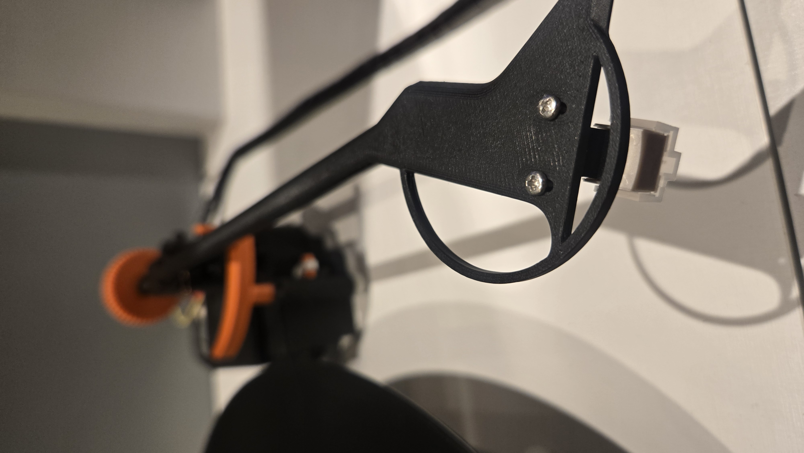
Electrónica
Firmware
tocadiscos.local vía mDNSConstruí el tuyo
Todo lo que necesitás — archivos 3D, esquema electrónico, firmware e instrucciones — está en un único repositorio en GitHub. Open source, siempre.